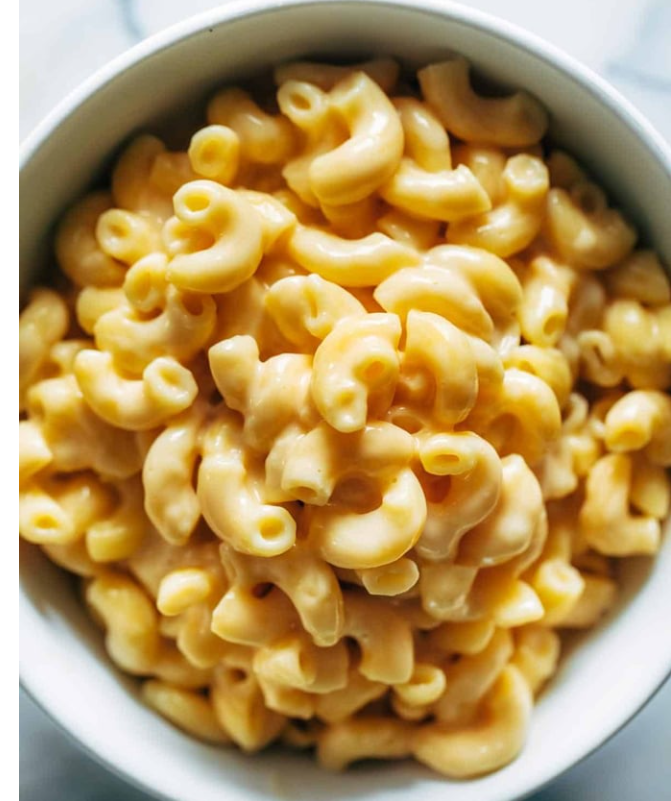

Cauliflower Orange Gnocchi
Up
Ingredients
- 1 package gnocchi
- 2–3 tablespoons unsalted butter
- a medium-large head of cauliflower, cored and thinly slicedintobite-sized pieces on a mandoline
- 2 shallots, minced
- 1/4 – 1/2 cup heavy cream
- 1/2 – 1 teaspoons red pepper flakes
- 1 1/2 teaspoons salt
- juice and zest of 1 orange
- chives for topping
INSTRUCTION
-
Cook:the gnocchi according to package directions. Set
aside.
-
Add: cauliflower, shallot, and cooked gnocchi; let it sit
for a few minutes and then stir and repeat.Heat the butter over
high heat in a large nonstick skillet. You want the cauliflower
and gnocchi to get browned, and the shallots to get soft.
-
Add: in the cream, orange juice, red pepper flakes, and
salt. Simmer for just a minute or two until desired consistency is
reached – everything should be coated in a silky light sauce.
-
Serveimmediately topped with fresh chives and orange zest.
OH MY GOODNESS.
Instant Pot Mac And Cheese

Up
Ingredients
- 1 pound uncooked elbow pasta
- 4 cups water
- 1 teaspoon salt
- 3 tablespoons butter, cut into small pieces
- 2 1/2 cups shredded cheese
- up to 1/2 cup whole milk
INSTRUCTIONS
-
Noodles: Put the pasta, water, and salt into the Instant
Pot. Cook for 4 minutes using the manual function. Quick release
the steam so your noodles don’t get overcooked.
-
cheese: Gently stir in the butter until melted. Add the
cheese and milk (use 2-3 tablespoons of milk at a time, as needed,
up to 1/2 cup). Add more seasoning or liquid if necessary. For
best results, let it sit for 5-10 minutes to let it thicken up a
bit. MWAH! Enjoy. It’s so, so good.